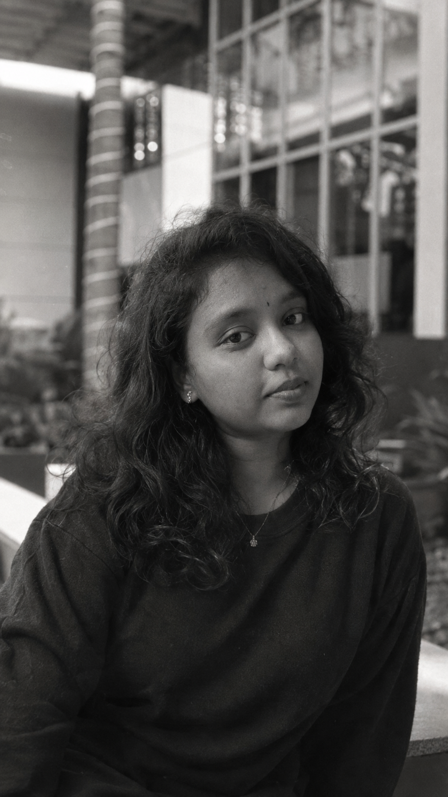

Translating complex dataset dynamics into actionable business intelligence through Python, SQL, Power BI, and Machine Learning.

Computer Science & Engineering graduate with a strong foundation in data analytics, exploratory data analysis, data visualization, and web development. I enjoy transforming raw information into meaningful insights that support smarter business decisions and practical problem solving.
My work blends analytical thinking with technical execution, using Python, SQL, Power BI, and statistics to uncover trends, build dashboards, and deliver clear business-oriented solutions. I am especially interested in creating impactful, data-driven experiences that connect technical depth with real-world value across data analytics, Power BI dashboards, web development, and machine learning.
Cleaned and structured raw superstore datasets using Pandas and SQL to uncover profitability trends, regional sales distribution, and customer purchase behavior.
Designed an interactive analytical dashboard consolidating consumer demographics, cuisine preferences, and rating distributions to generate business intelligence insights.
Award-winning eye-tracking accessibility system built with OpenCV and MediaPipe allowing users with motor disabilities to navigate cursor controls hands-free.
Delivered training modules across Python, SQL, Excel, Power BI, and Web Development. Mentored students through practical exercises and technical debugging.
Masai School — Worked on real-world data pipelines, exploratory data analysis, dashboard creation, and statistical modeling.
Nytt Analytics — Tracked marketing performance, analyzed campaign metrics, and designed promotional materials.
Designed and deployed responsive web solutions for industrial and educational clients using HTML, CSS, and JavaScript.
Computer Science & Engineering
Chettinad College of Engineering and Technology, Karur
CBSE Stream
Velammal Vidyalaya, Karur
"Advancements in Machine Learning Algorithms: A Comparative Analysis of Single, Ensemble, Hybrid, and Emerging Methods"
Published in: International Journal of Research Publication and Reviews (IJRPB)
View PublicationMasai School
Comprehensive training in Python, SQL, Excel, Power BI, Exploratory Data Analysis, and Statistical Modeling.
I am actively seeking full-time opportunities in Data Analysis, Data Science, and Business Intelligence.